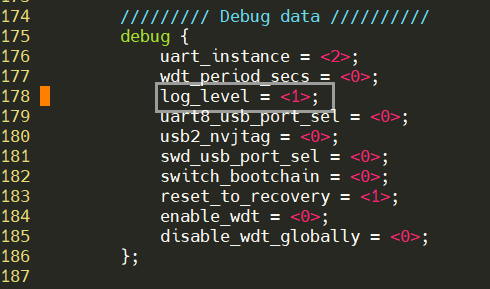
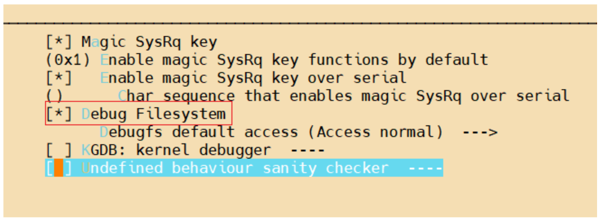

DRIVE Linux Boot KPI
This chapter lists changes to improve Boot KPI in production builds. The exact definition of Boot KPI is provided by each customer.
To improve Boot KPI, 2 additional changes have to be applied on Top of PDK
-
Disable Foundation Logs
-
Disable CONFIG_DEBUG_FS for Kernel
Launch the init script after kernel init is done.
Details about the above changes are given in below sections.
Disabling Foundation Logs
To disable Foundation logs on the console, follow the steps below. This disables MB1, MB2, and QB console logs.
-
Open below DT file
$TOP/drive-foundation/platform-config/hardware/nvidia/platform/t23x/common/bct/misc/tegra234-mb1-bct-misc-common.dtsi -
Change
log_levelproperty to <1> underdebugDT node. -
Do bind_partition and flash.

Disabling BPMP Logs
To disable BPMP logs:
- Open the BPMP UART file:
$TOP/drive-foundation/platform-config/bpmp_dtsi/t23x/include/parts/policy/serial-comb-uart.dtsi -
Note: Do this before the bind_partitions step.
In the above file, remove the contents of the "serial" node. For example:
Before
/ { serial { port = <3>; has_input; combined-uart { enabled; }; }; };After
/ { serial { }; };
Disabling CONFIG_DEBUG_FS for Kernel
DEBUG_FS feature is provided by the kernel which helps in debugging and is not required for any functionality. It should be disabled and a new kernel image should be generated. Please refer to the PDK Section “System Programming” for steps for Kernel compilation. Here we are listing only the steps about How to disable CONFIG_DEBUG_FS via menuconfig.
-
cd drive-linux/kernel/source/oss_src/kernel -
export ARCH=arm64 -
make DEFCONFIG_PATH=arch/arm64/configs/tegra_defconfig -
make menuconfigThis brings up kernel menuconfig UI.
- CONFIG_DEBUG_FS is located in:
Kernel hacking -> Generic Kernel Debugging Instruments -> Debug FilesystemDeselect Debug Filesystem. Save and Exit.

- Execute:
make savedefconfig cp -v defconfig arch/arm64/configs/tegra_defconfig make mrproper
Follow kernel compilation steps in the System Programming chapter to build the new kernel image and flash.
Invoking the init Script
Boot KPI measurements take place right after initramfs. Usually, once initramfs completes, the "init" program is launched. In this case, "init" is just a symbolic link to "systemd".
So to measure boot KPIs, you can instead point the "init" executed by the system to a script that runs your boot KPI program, then launches systemd.
A script to do this has been created and is present by default on the system:
/usr/bin/nv_camera_display.sh
This script loads all necessary kernel modules and launches the nvsys_init_time application either with or without display (controlled via a flag inside the script), then launches systemd.
- (Recommended method) Add
init=/usr/bin/nv_camera_display.shto the kernel command line:- Before the bind_partitions step, append
init=/usr/bin/nv_camera_display.shto each GOS0_OS_ARG definition inside<top>/drive-foundation/platform-config/hardware/nvidia/platform/t23x/automotive/pct/drive_av/linux/linux_storage.cfg.Before
#ifdef NDAS_STORAGE_CONFIG #ifndef DISABLE_UFS #define GOS0_OS_ARG "aurixfw=AFW root=/dev/vblkdev0p1 loglevel=3 ufs_fs=/dev/vblkdev11 gpt rootwait ip=off ro gpt tegra_keep_boot_clocks disable_android_paranoid_network sdhci_tegra.en_boot_part_access=1 console=ttyS2,115200n8 pci=ecrc=on" #else #define GOS0_OS_ARG "aurixfw=AFW root=/dev/vblkdev0p1 loglevel=3 gpt rootwait ip=off ro gpt tegra_keep_boot_clocks disable_android_paranoid_network sdhci_tegra.en_boot_part_access=1 console=ttyS2,115200n8 pci=ecrc=on" #endif #elif defined(REC_STORAGE_CONFIG) #if defined(SANITY_BUILD) || defined(ENABLE_MODS_CONFIG) #define GOS0_OS_ARG "root=/dev/vblkdev0p1 usr_fs=/dev/vblkdev1:/persistent usr_fs2=/dev/vblkdev3:/home gpt rootwait ip=off rw gpt tegra_keep_boot_clocks disable_android_paranoid_network sdhci_tegra.en_boot_part_access=1 console=ttyS2,115200n8 pci=ecrc=on" #else #define GOS0_OS_ARG "aurixfw=AFW root=/dev/vblkdev0p1 loglevel=3 usr_fs=/dev/vblkdev1:/persistent usr_fs2=/dev/vblkdev3:/home gpt rootwait ip=off ro gpt tegra_keep_boot_clocks disable_android_paranoid_network sdhci_tegra.en_boot_part_access=1 console=ttyS2,115200n8 pci=ecrc=on" #endif #else #if defined(SANITY_BUILD) || defined(ENABLE_MODS_CONFIG) #ifndef DISABLE_UFS #define GOS0_OS_ARG "root=/dev/vblkdev0p1 usr_fs=/dev/vblkdev1:/persistent ufs_fs=/dev/vblkdev2 usr_fs2=/dev/vblkdev3:/home gpt rootwait ip=off rw gpt tegra_keep_boot_clocks disable_android_paranoid_network sdhci_tegra.en_boot_part_access=1 console=ttyS2,115200n8 pci=ecrc=on" #else #define GOS0_OS_ARG "root=/dev/vblkdev0p1 usr_fs=/dev/vblkdev1:/persistent gpt rootwait ip=off rw gpt tegra_keep_boot_clocks disable_android_paranoid_network sdhci_tegra.en_boot_part_access=1 console=ttyS2,115200n8 pci=ecrc=on" #endif #else #ifndef DISABLE_UFS #define GOS0_OS_ARG "aurixfw=AFW root=/dev/vblkdev0p1 loglevel=3 usr_fs=/dev/vblkdev1:/persistent ufs_fs=/dev/vblkdev2 usr_fs2=/dev/vblkdev3:/home gpt rootwait ip=off rw gpt tegra_keep_boot_clocks disable_android_paranoid_network sdhci_tegra.en_boot_part_access=1 console=ttyS2,115200n8 pci=ecrc=on" #else #define GOS0_OS_ARG "aurixfw=AFW root=/dev/vblkdev0p1 loglevel=3 usr_fs=/dev/vblkdev1:/persistent gpt rootwait ip=off rw gpt tegra_keep_boot_clocks disable_android_paranoid_network sdhci_tegra.en_boot_part_access=1 console=ttyS2,115200n8 pci=ecrc=on"After
#ifndef DISABLE_UFS #define GOS0_OS_ARG "aurixfw=AFW root=/dev/vblkdev0p1 loglevel=3 ufs_fs=/dev/vblkdev11 gpt rootwait ip=off ro gpt tegra_keep_boot_clocks disable_android_paranoid_network sdhci_tegra.en_boot_part_access=1 console=ttyS2,115200n8 pci=ecrc=on init=/usr/sbin/nv_camera_display.sh" #else #define GOS0_OS_ARG "aurixfw=AFW root=/dev/vblkdev0p1 loglevel=3 gpt rootwait ip=off ro gpt tegra_keep_boot_clocks disable_android_paranoid_network sdhci_tegra.en_boot_part_access=1 console=ttyS2,115200n8 pci=ecrc=on init=/usr/sbin/nv_camera_display.sh" #endif #elif defined(REC_STORAGE_CONFIG) #if defined(SANITY_BUILD) || defined(ENABLE_MODS_CONFIG) #define GOS0_OS_ARG "root=/dev/vblkdev0p1 usr_fs=/dev/vblkdev1:/persistent usr_fs2=/dev/vblkdev3:/home gpt rootwait ip=off rw gpt tegra_keep_boot_clocks disable_android_paranoid_network sdhci_tegra.en_boot_part_access=1 console=ttyS2,115200n8 pci=ecrc=on init=/usr/sbin/nv_camera_display.sh" #else #define GOS0_OS_ARG "aurixfw=AFW root=/dev/vblkdev0p1 loglevel=3 usr_fs=/dev/vblkdev1:/persistent usr_fs2=/dev/vblkdev3:/home gpt rootwait ip=off ro gpt tegra_keep_boot_clocks disable_android_paranoid_network sdhci_tegra.en_boot_part_access=1 console=ttyS2,115200n8 pci=ecrc=on init=/usr/sbin/nv_camera_display.sh" #endif #else #if defined(SANITY_BUILD) || defined(ENABLE_MODS_CONFIG) #ifndef DISABLE_UFS #define GOS0_OS_ARG "root=/dev/vblkdev0p1 usr_fs=/dev/vblkdev1:/persistent ufs_fs=/dev/vblkdev2 usr_fs2=/dev/vblkdev3:/home gpt rootwait ip=off rw gpt tegra_keep_boot_clocks disable_android_paranoid_network sdhci_tegra.en_boot_part_access=1 console=ttyS2,115200n8 pci=ecrc=on init=/usr/sbin/nv_camera_display.sh" #else #define GOS0_OS_ARG "root=/dev/vblkdev0p1 usr_fs=/dev/vblkdev1:/persistent gpt rootwait ip=off rw gpt tegra_keep_boot_clocks disable_android_paranoid_network sdhci_tegra.en_boot_part_access=1 console=ttyS2,115200n8 pci=ecrc=on init=/usr/sbin/nv_camera_display.sh" #endif #else #ifndef DISABLE_UFS #define GOS0_OS_ARG "aurixfw=AFW root=/dev/vblkdev0p1 loglevel=3 usr_fs=/dev/vblkdev1:/persistent ufs_fs=/dev/vblkdev2 usr_fs2=/dev/vblkdev3:/home gpt rootwait ip=off rw gpt tegra_keep_boot_clocks disable_android_paranoid_network sdhci_tegra.en_boot_part_access=1 console=ttyS2,115200n8 pci=ecrc=on init=/usr/sbin/nv_camera_display.sh" #else #define GOS0_OS_ARG "aurixfw=AFW root=/dev/vblkdev0p1 loglevel=3 usr_fs=/dev/vblkdev1:/persistent gpt rootwait ip=off rw gpt tegra_keep_boot_clocks disable_android_paranoid_network sdhci_tegra.en_boot_part_access=1 console=ttyS2,115200n8 pci=ecrc=on init=/usr/sbin/nv_camera_display.sh"
- Before the bind_partitions step, append
- The second method is to manually replace /sbin/init with this script after
flashing and booting successfully:
sudo rm /sbin/init sudo cp /usr/bin/nv_camera_display.sh /sbin/init sudo chmod 777 /sbin/init #Reboot system once the above has been successfully performed
Viewing Profiling Results
In the process of running /usr/bin/nv_camera_display.sh, timestamps
for relevant events are recorded into a dedicated memory region.
- Ensure the
tegra_bootloader_debug.kokernel module is loaded. It is loaded as part ofnv_camera_display.sh, but in case that was not run, it can be loaded from/lib/modules/$(uname -r)/kernel/drivers/platform/tegra/tegra_bootloader_debug.ko. - Expose the timestamps in the memory region:
sudo cat /sys/kernel/tegra_bootloader/profiler - The timestamps are now present in
/var/log/syslog.- They are visible at the end of the file. For example, using the
"less" program:
- Open the file:
less /var/log/syslog - Press the "End" key on your keyboard.
- Open the file:
- They are visible at the end of the file. For example, using the
"less" program:
- Example:
Jun 13 23:09:55 tegra-ubuntu kernel: [ 116.959255] MB1 start 50141 Jun 13 23:09:55 tegra-ubuntu kernel: [ 116.959262] Jun 13 23:09:55 tegra-ubuntu kernel: [ 116.959299] MB2 Start 270591 Jun 13 23:09:55 tegra-ubuntu kernel: [ 116.959305] MB2 Device Init Done 450883 180292 Jun 13 23:09:55 tegra-ubuntu kernel: [ 116.959318] MB2 Finished 680525 229642 Jun 13 23:09:55 tegra-ubuntu kernel: [ 116.959326] Jun 13 23:09:55 tegra-ubuntu kernel: [ 116.959390] [TF] early setup entry 687218 Jun 13 23:09:55 tegra-ubuntu kernel: [ 116.959402] [TF] early setup exit 691388 4170 Jun 13 23:09:55 tegra-ubuntu kernel: [ 116.959413] [TF] arch setup entry 691413 25 Jun 13 23:09:55 tegra-ubuntu kernel: [ 116.959424] [TF] arch setup exit 729980 38567 Jun 13 23:09:55 tegra-ubuntu kernel: [ 116.959435] [TF] plat setup entry 729983 3 Jun 13 23:09:55 tegra-ubuntu kernel: [ 116.959447] [TF] plat setup exit 731164 1181 Jun 13 23:09:55 tegra-ubuntu kernel: [ 116.959457] [TF] bl31 exit 1260853 529689 Jun 13 23:09:55 tegra-ubuntu kernel: [ 116.959465] Jun 13 23:09:55 tegra-ubuntu kernel: [ 116.959481] qb: EL2 Init TS 1260862 Jun 13 23:09:55 tegra-ubuntu kernel: [ 116.959491] qb: BPMP Init 1275862 15000 Jun 13 23:09:55 tegra-ubuntu kernel: [ 116.959498] qb: LoadKernel 1490614 214752 Jun 13 23:09:55 tegra-ubuntu kernel: [ 116.959506] qb: LoadDTB 1490619 5 Jun 13 23:09:55 tegra-ubuntu kernel: [ 116.959513] qb: KernelEnv Setup 1490703 84 Jun 13 23:09:55 tegra-ubuntu kernel: [ 116.959523] qb: Kernel Handoff 1490704 1 Jun 13 23:09:55 tegra-ubuntu kernel: [ 116.959533] Jun 13 23:09:55 tegra-ubuntu kernel: [ 116.959548] HV: Start 1504201 Jun 13 23:09:55 tegra-ubuntu kernel: [ 116.959553] HV: Start loading containers 1504562 361 Jun 13 23:09:55 tegra-ubuntu kernel: [ 116.959568] HV: Done loading containers 1508177 3615 Jun 13 23:09:55 tegra-ubuntu kernel: [ 116.959581] HV: Done with guest_init 1508818 641 Jun 13 23:09:55 tegra-ubuntu kernel: [ 116.959593] HV: Start memory allocation & mapping(ivc, guest) 1509355 537 Jun 13 23:09:55 tegra-ubuntu kernel: [ 116.959616] HV: plat: hsp init done 1512969 3614 Jun 13 23:09:55 tegra-ubuntu kernel: [ 116.959628] HV: plat: bpmp init done 1512973 4 Jun 13 23:09:55 tegra-ubuntu kernel: [ 116.959640] HV: plat: ape init done 1512993 20 Jun 13 23:09:55 tegra-ubuntu kernel: [ 116.959652] HV: Done with memory operations 1513827 834 Jun 13 23:09:55 tegra-ubuntu kernel: [ 116.959668] HV: Before printing hello 1513864 37 Jun 13 23:09:55 tegra-ubuntu kernel: [ 116.959682] HV: Start Asynchronous SMP 1514527 663 Jun 13 23:09:55 tegra-ubuntu kernel: [ 116.959695] Jun 13 23:09:55 tegra-ubuntu kernel: [ 116.959710] pl: EL1 Init TS 1549640 Jun 13 23:09:55 tegra-ubuntu kernel: [ 116.959719] pl: LoadKernel 1815518 265878 Jun 13 23:09:55 tegra-ubuntu kernel: [ 116.959728] pl: LoadRamdisk 1838481 22963 Jun 13 23:09:55 tegra-ubuntu kernel: [ 116.959737] pl: LoadDTB 1839383 902 Jun 13 23:09:55 tegra-ubuntu kernel: [ 116.959744] pl: KernelEnv Setup 1844227 4844 Jun 13 23:09:55 tegra-ubuntu kernel: [ 116.959755] pl: Kernel Handoff 1844229 2 Jun 13 23:09:55 tegra-ubuntu kernel: [ 116.959765] modprobe cdi_mgr cdi_tsc Jun 13 23:09:55 tegra-ubuntu kernel: [ 116.959765] 3366455 1522226 Jun 13 23:09:55 tegra-ubuntu kernel: [ 116.959779] insmod nvmap.ko Jun 13 23:09:55 tegra-ubuntu kernel: [ 116.959779] 3387524 21069 Jun 13 23:09:55 tegra-ubuntu kernel: [ 116.959789] insmod nvidia.ko Jun 13 23:09:55 tegra-ubuntu kernel: [ 116.959789] 3810086 422562 Jun 13 23:09:55 tegra-ubuntu kernel: [ 116.959799] insmod nvidia-modeset.ko Jun 13 23:09:55 tegra-ubuntu kernel: [ 116.959799] 3833303 23217 Jun 13 23:09:55 tegra-ubuntu kernel: [ 116.959813] insmod nvidia-drm.ko Jun 13 23:09:55 tegra-ubuntu kernel: [ 116.959813] 3854140 20837 Jun 13 23:09:55 tegra-ubuntu kernel: [ 116.959824] insmod nvgpu.ko Jun 13 23:09:55 tegra-ubuntu kernel: [ 116.959824] 4252381 398241 Jun 13 23:09:55 tegra-ubuntu kernel: [ 116.959834] launching app Jun 13 23:09:55 tegra-ubuntu kernel: [ 116.959834] 4324340 71959 Jun 13 23:09:55 tegra-ubuntu kernel: [ 116.959842] nvsys_init_time: Got first camera frames 5487560 1163220 Jun 13 23:09:55 tegra-ubuntu kernel: [ 116.959863] nvsys_init_time: First frame displayed 5499324 11764 Jun 13 23:09:55 tegra-ubuntu kernel: [ 116.959883] starting systemd Jun 13 23:09:55 tegra-ubuntu kernel: [ 116.959883] 10011246 4511922 Jun 13 23:09:55 tegra-ubuntu kernel: [ 116.959934] Jun 13 23:09:55 tegra-ubuntu kernel: [ 116.959938] pl: EL1 Init TS 1550195 Jun 13 23:09:55 tegra-ubuntu kernel: [ 116.959947] pl: LoadKernel 1764194 213999 Jun 13 23:09:55 tegra-ubuntu kernel: [ 116.959956] pl: LoadDTB 1765075 881 Jun 13 23:09:55 tegra-ubuntu kernel: [ 116.959964] pl: KernelEnv Setup 1768581 3506 Jun 13 23:09:55 tegra-ubuntu kernel: [ 116.959975] pl: Kernel Handoff 1768583 2 Jun 13 23:09:55 tegra-ubuntu kernel: [ 116.959986] Jun 13 23:09:55 tegra-ubuntu kernel: [ 116.960007] LK_INIT_LEVEL_KERNEL 1613966 Jun 13 23:09:55 tegra-ubuntu kernel: [ 116.960017] LK_INIT_LEVEL_THREADING 1613975 9 Jun 13 23:09:55 tegra-ubuntu kernel: [ 116.960030] LK_INIT_LEVEL_ARCH 1613976 1 Jun 13 23:09:55 tegra-ubuntu kernel: [ 116.960040] LK_INIT_LEVEL_PLATFORM 1614154 178 Jun 13 23:09:55 tegra-ubuntu kernel: [ 116.960052] LK_INIT_LEVEL_TARGET 1614210 56 Jun 13 23:09:55 tegra-ubuntu kernel: [ 116.960063] Notifying system manager 1614298 88 Jun 13 23:09:55 tegra-ubuntu kernel: [ 116.960075] Notified system manager 1614311 13 Jun 13 23:09:55 tegra-ubuntu kernel: [ 116.960088] LK_INIT_LEVEL_APPS 1614344 33How to interpret the data:- There are two columns with relevant numbers.
- The first column (second from right) is the absolute time since boot it took for the associated event to take place in microseconds (usec).
- The second column (first from right) is the delta between the associated event and the previous event in usec.
For example, the "nvsys_init_time: Got first camera frames" event took place 5487560 usec (5.48 sec) after boot and occurred 1163220 usec (1.16 sec) after the previous event, "launching app".
- nv_camera_display.sh/nvsys_init_time specific information:
- Events prefixed with "nvsys_init_time" took place while the nvsys_init_time application ran as part of nv_camera_display.sh
- "Got first camera frames": This is when the application obtained the first set of frames from the camera.
- "First frame displayed": This is when the first frames obtained were sent to the display.
- The events preceding these two without another specific
prefix (i.e. "launching app", "insmod ...", "modprobe
...") took place earlier in nv_camera_display.sh and
specify relevant milestones in that script. The
specifics of what they measure can be viewed in
nv_camera_display.sh.
- There are two columns with relevant numbers.
Changing the Camera Configuration on Your Side if the Sensors are Connected to a Different Port
Hardcoded configs are located in the nvsys_init_time directory:
<top>/drive-linux/tests/nvsys_init_time/platform- F008A120RM0A_CPHY_x4 - AR0820 4 sensor hardcoded config
- F008A120RM0A_CPHY_x4_s - AR0820 single sensor hardcoded config
Hardcoded configs for other sensors will be added in future releases.
- Update the CSI port to reflect the port cameras will be connected to in the
config. For example,
csiPort = NVSIPL_CAP_CSI_INTERFACE_TYPE_CSI_EFindicates that cameras are present on the EF port (3rd from the left in the link mask).Updating the CSI port will also require the i2cDevice (SW I2C Controller) to be changed. The mapping is as follows:-
CSI AB (HW I2C1): SW i2cdevice 0
-
CSI CD (HW I2C4): SW i2cDevice 3
-
CSI EF (HW I2C3): SW i2cDevice 2
-
CSI GH (HW I2C8): SW i2cDevice 7
-
- Update the numCameraModules param to reflect the number of cameras connected to that port. For example, for a link mask value of 0x1100, there are two (2) cameras connected, so numCameraModules = 2U.
- (Optional) If you want to modify a config to reduce/increase the number of cameras in a device block, remove/add members to cameraModuleInfoList as needed. Make sure to set the linkIndex of each appropriately.